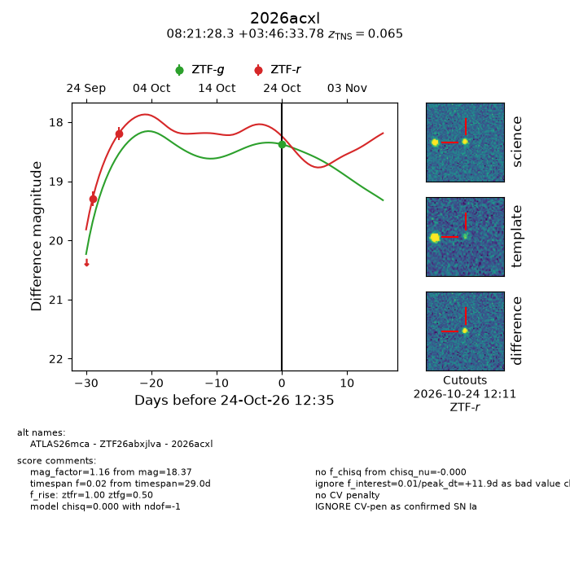
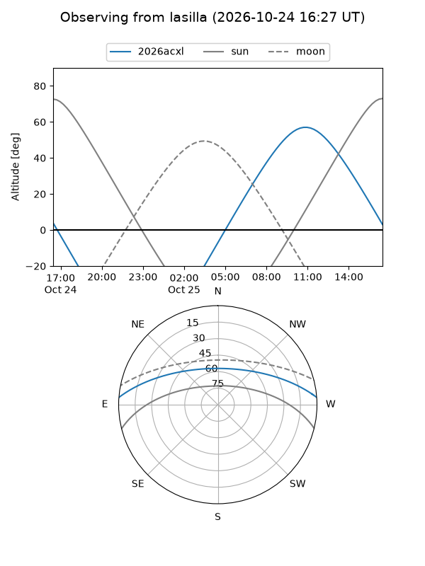
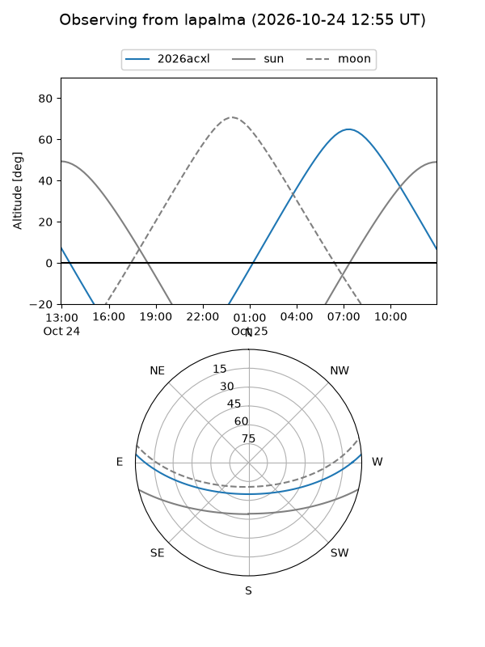
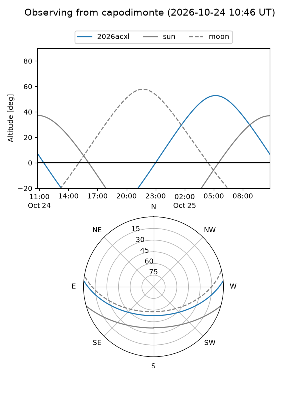
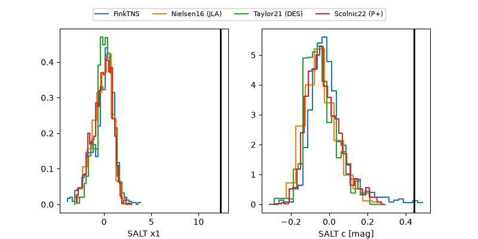

2026acxl
Target 2026acxl at 2026-10-24 12:36
Aliases and brokers:
FINK-ZTF: ztf.fink-portal.org/ZTF26abxjlva
Lasair-ZTF: lasair-ztf.lsst.ac.uk/objects/ZTF26abxjlva
ALeRCE-ZTF: alerce.online/object/ZTF26abxjlva
YSE-PZ: ziggy.ucolick.org/yse/transient_detail/2026acxl
TNS name: wis-tns.org/object/2026acxl
Direct TNS query: direct search
alt names
ZTF26abxjlva (ztf,fink_ztf)
2026acxl (tns,yse)
ATLAS26mca (atlas)
Coordinates:
equatorial (ra, dec) = 125.3677,+3.77605
equatorial (HMS+DMS) = 08:21:28.26,+03:46:33.78
galactic (l, b) = (220.0778,+21.71515)
Flags:
TNS type: SN Ia
TNS redshift: 0.0650
peak dt: +11.9
Photometry:
last ztfg=18.37, ztfr=18.19
1 ztfg, 2 ztfr detections
Lightcurve

Visibility



Additional plots
